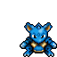
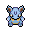

Pokédex / #031

Nidoqueen #031
PoisonGround
The body is covered by stiff, needle-like scales. If it becomes excited, the needles bristle outwards.
Generation 1 · Kanto

Stats
| Attack | 92 | |
|---|---|---|
| Defense | 87 | |
| Sp. Atk | 75 | |
| Sp. Def | 85 |
In the wild
| Wild level | 65–75 |
|---|---|
| HP | 90 |
| Experience | 15 |
| Egg groups | – |
Evolution
- Evolves from Nidorina at level 55, with a Moon Stone.
Moves
| Level | Move | Type | Category | Power | Energy | Cooldown | Effect | |
|---|---|---|---|---|---|---|---|---|
| 1 | Tackle | Normal | Physical | 15 | 15 | 1s | Tackle is one of the most common and basic moves a Pokemon learns. It deals damage with no additional effects. | |
| 5 | Scratch | Normal | Physical | 40 | 40 | 6s | Scratch inflicts damage and has no secondary effect. | |
| 10 | Double Kick | Fighting | Physical | 30 | 30 | 9s | Double Kick inflicts damage, hitting the target 2 times per use. | |
| 15 | Poison Sting | Poison | Physical | 15 | 20 | 5s | Poison Sting inflicts damage and has a 30% chance of poisoning the target. | |
| 20 | Bite | Dark | Physical | 60 | 60 | 9s | Bite deals damage and has a 30% chance of causing the target to flinch. | |
| 25 | Poison Fang | Poison | Physical | 50 | 55 | 8s | Poison Fang inflicts damage and has a 30% chance of badly poisoning the target. | |
| 35 | Fury Swipes | Normal | Physical | 18 | 45 | 9s | Fury Swipes inflicts damage, hitting 2-5 times per use. | |
| 40 | Crunch | Dark | Physical | 80 | 80 | 12s | Crunch deals damage and has a 20% chance of lowering the target's Defense by one stage. | |
| 45 | Captivate | Normal | Status | – | 60 | 25s | Captivate lowers the Special Attack of the target by two stages, if they are of the opposite gender to the user. | |
| 50 | Earth Power | Ground | Special | 9 | 100 | 21s | Earth Power deals damage and has a 10% chance of lowering the target's Special Defense by one stage. | |
| 60 | Acid | Poison | Special | 40 | 40 | 6s | Acid deals damage and has a 10% chance of lowering the target's Special Defense by one stage. | |
| 65 | Body Slam | Normal | Physical | 85 | 85 | 13s | Body Slam deals damage and has a 30% chance of paralyzing the target. | |
| 70 | Skull Bash | Normal | Physical | 130 | 130 | 15s | Increases Defense on first turn, attacks on second turn. | |
| 75 | Superpower | Fighting | Physical | 120 | 120 | 20s | Superpower deals damage but lowers the user's Attack and Defense by one stage each after attacking. | |
| 80 | Stealth Rock | Rock | Status | 100 | 120 | 25s | Stealth Rock deals damage and lower the Speed of the target by two stages. |
Field abilities
DigRock ClimbStrengthRock SmashHeadbutt
Special abilities
Poison PointRivalry
Egg moves
Beat UpCharmChip AwayCounterDisableEndureFocus EnergyIron TailPursuitSkull BashSupersonicTake DownVenom Drench
Technical machines
Aerial AceAvalancheBideBlizzardBody SlamBrick BreakBubblebeamCounterDefense CurlDouble EdgeDouble TeamDynamic PunchEarthquakeFire BlastFire PunchFissureFlamethrowerFocus PunchFury CutterHeadbuttHorn DrillHyper BeamIce BeamIce PunchIcy WindIron TailMega KickMega PunchMimicMud SlapPay DayPoison JabRageRain DanceReflectRestRoarRock SlideRock TombSandstormSeismic TossShadow BallShock WaveSkull BashSludge BombSoftboiledSubmissionSubstituteTake DownTauntThunderThunder PunchThunderboltToxicWater GunWater Pulse
Drops
| Item | Amount | Chance | |
|---|---|---|---|
| bottle of poison | 1–22 | 100% | |
| venom pendant | 1–3 | 75% | |
| razor fang | 1–4 | 71.4% | |
| cutting fang | 1 | 30% | |
| cookie | 1–5 | 3% | |
| lemon | 1–5 | 3% | |
 | nidoqueen doll | 1 | 0.1% |
| Toxic Plate | 1 | 0.05% | |
| Earth Plate | 1 | 0.05% | |
| Moon Stone | 1 | 0.02% | |
| held poison barb | 1 | 0.01% | |
| held soft sand | 1 | 0.01% |